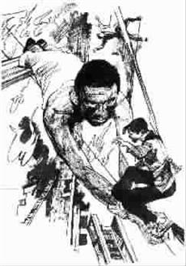

2.05米的绳子
●周海亮
发现失火的时候，已经晚了，男人拉着女人冲向楼梯，却被大火扑回。火势迅速蔓延，整栋大楼像一块疯狂燃烧的炭，将每一寸空间烤成滚烫的烙铁。尽管他们关紧房门，火舌和浓烟还是从门缝里蹿进来，狭小的房间迅速变得炙热难当。
这是午夜的一个宾馆，男人和女人站在九楼窗口呼喊，拼命挥动手臂。他们看见消防队员架起云梯，慌乱而急切地向他们靠近。可是没用，肆虐的大火让云梯像一只巨大的受伤鸵鸟，在距大楼很远的地方徘徊，停滞不前。火势越来越猛，房间里的空气仿佛开始燃烧。男人说，跳楼！
他们把床单和被罩撕成宽宽的长条，扭成一条绳子，男人估测了一下长度，摇摇手，又脱下衬衣接上，长度仍然不够。男人开始撕扯窗帘，一股火焰猛地蹿进来，在男人面前拐了个弯。女人说，没时间了。
男人将床上的被褥扔出窗外，然后把绳子系在一根结实的窗骨上，狠狠地拽拽。他对女人说，滑下去！
女人拼命摇头，拼命哭泣。
男人说没事，你抓紧绳子，慢慢向下滑，准能行。女人说你呢？男人说你先滑下去，我马上下。他把女人抱上窗台，将绳子末端在她腰上缠了一圈。男人大汗涔涔，呼吸困难。男人说千万抓紧，记住，一点一点往下滑。男人拉住绳子的另一端，说，我爱你。
火焰逼近了男人，女人开始向下滑。她像一只笨拙的壁虎，沿着滚烫的楼壁，一寸一寸地接近地面。
终于，女人滑到了绳子尽头。可是她的身子，仍然停留在半空。四面都是烈焰，女人的手指钻心地痛。
男人瞬间做出了一个决定。他冲女人喊，别怕，坚持半分钟！男人用尽浑身力气将那段绳子往上拉，然后用牙齿咬开系在窗骨上的死结。巨大的冲击力让男人的身体猛地前倾，险些被拉出窗外。男人死死地抓住绳子的一端，冲女人喊，别朝下看！一会儿我喊你，你就跳下去！
屋子里已经火光冲天，男人感觉自己的头发眉毛都在燃烧。
男人用双脚钩住两根窗骨，像杂技演员般慢慢探下身体。男人的表情痛苦并且扭曲，女人的体重将他的身体完全拉直。
男人变成一段绳子，一段连接在女人和窗骨之间的生死之绳。男人的身体还在拉直和伸长，1.75米的男人，把那段由床单和被罩编成的绳子的长度，增加了2.05米；把女人到地面的距离，减少了2.05米。
火焰噬咬到男人钩住窗棂的双脚，他感到自己的皮肤在“毕剥”作响，男人朝女人喊，快跳！
女人跳下去了，重重地摔在男人扔在地面的被褥上，四周都是浓烟，几个消防员终于突破烈焰，朝她的位置跑来。
女人很快站起来。她高呼着男人的名字。男人仍然挂在那里，男人是一段2.05米的绳子。
男人试图将身体重新弯成一张弓，可是却再一次被拉直，他已经一丝力气都没了，男人的体力完全透支给了女人，他的衣服在燃烧。空中，男人像一位出色的杂技演员。
男人不是杂技演员。女人看到男人静止了几秒钟后，突然从高空垂直落下。空中的男人变成一朵灿烂的焰火。他朝女人高喊：闪开！
没能在第一时间逃出大楼的人，除了这女人，全部蒙难。她是唯一获救的人。
(满勤勤摘自《深圳青年》，刘展国图)